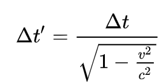
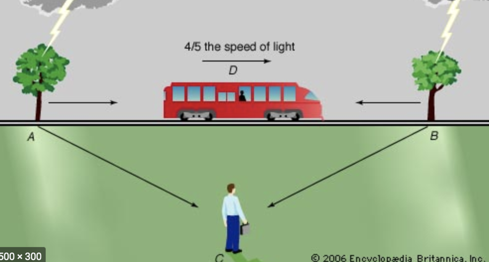
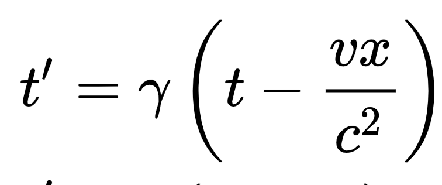
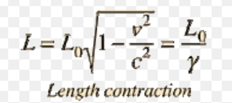
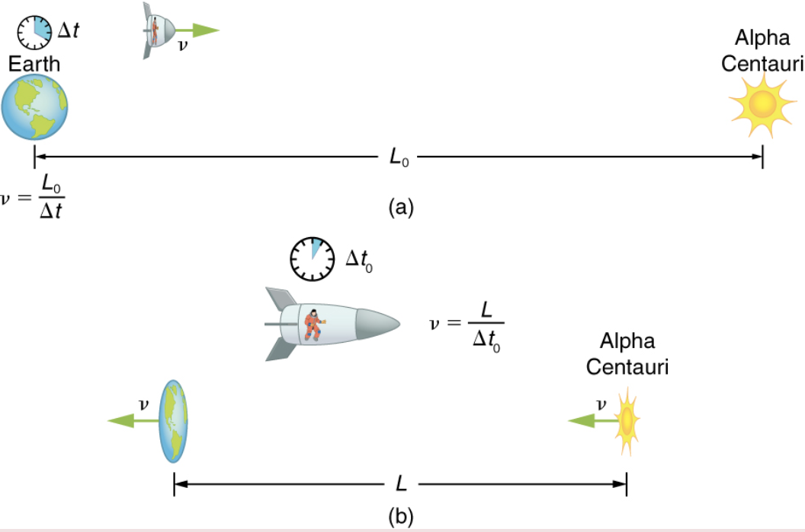
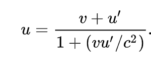

Hello my dear subscribers, and today we shall be discussing two very important consequences which arise as a result of the speed of light being constant: time-dilation and space-contraction. So after the Michelson-Morley experiment, Einstein had evidence of the speed of light being constant and therefore went on to write his own version of Relativity. Now the two main postulates of his theory were-
- The laws of physics are the same for all inertial reference frames i.e there is no preffered reference frame
- The speed of light is a universal constant for all observers irrespective of their velocities
Keep these two in mind we'll be using them a lot. And also note that these are only valid as long as the bodies in consideration are in non-inertial frames(not accelerating)
Time Dilation
Now,in order to understand these two effects we are going to perform something which physicists call a thought experiment. Imagine Two mirrors,one placed below the other with a small laser attached to the lower mirror l.You are standing on the ground and is at rest wrt the two mirrors. Your friend on the other hand is an astronaut in a spaceship which is travelling at a velocity v towards the sun with respect to the mirror. You switch on the laser at a given moment and see it travel in a straight line from the transmitter to the mirror and back. You also note the time taken by the laser to come back as Δ t .
Your friend,on the other hand, sees the light ray travel obliquely from the transmitter to the mirror and back. According to him, the distance covered by the laser, as given by the Pythagoras theorm will be
L= √(l2+(ct)2). Let's say that he aslo notes down the time to be Δ t'.(The figure below would help you understand better.)
But hey wait a second, since the speed of light is a universal constant, you can use the equations, speed= distance/time to find a relation between the two times! Go ahead and you will find that-
This is an effect called time dilation: the time elapsed between similar events increases as the relative velocity between objects increases.As objects approach the speed of light from one reference frame, time appears to move slower and slower. However, the effect of time-dilation is not observed in everyday life because we never come across objects moving with speeds even comparable to the speed of light! For example, if a body reaches 86% the speed of light, its time would appear to move twice as slower. Another small thing to note, is that the term √(1-(v/c)2) is often written as γ and is called the Lorentz-factor.

Congratulations! You just derived the equation for time dilation! This is genuinely a great achievement. But we're not done yet. Remember Einstein's second postulate which stated that the laws of physics do not change with a change in the frame? Well in that case your friend thinks that he is at rest and that you are moving with a velocity v in the other direction and therefore thinks that it is your clock that has slown down!

Confused? You should be! This is where relativity truly bends your brain. You see, the entire notion of there being only one universal time is destroyed.Time is relative. From your perspective you are stationary and your friend's clock is slow but from your friends perspective its the other way around. And the worst part is that both of you are absolutely right! If you are not convinced, simply make the two mirrors move along with the spaceship on which your friend is travelling. You will arrive to the same conclusion. Let us look at few amazing consequences of this phenomenon.
The Nature of Time
Now this is something which is genuinely interesting. A very important question which special relativity raised in physics is that what is the true nature of time? Or what is time? Is it simply some sort of big clock which ticks every second or two or do the atoms that make up the universe actually have a sense of what time is? And what really do we mean by time slowing down?
As it turns out our atoms in our body actually do have a sense of time. Atomic interactions such as radioactive decay actually slow down as we approach the speed of light. In fact experiments have proven that the half-life of radioactive elements actually slows down after orbiting at high speeds. Similarly biological processes such as digestion, metabolism and as a result aging also slow down as we move at higher velocity. Every object in this universe has a sense of the passage of time. But speaking about slowing aging let's deal with our first paradox.
Twin's Paradox
The twin's paradox is an incredibly famous thought experiment in which we send one of two twins on a spaceship travelling at speeds close to the speed of light along a round trip journey from Earth to Mars(not necessarily Mars but you get the idea). The other twin, who remains stationary on Earth thinks that as the first twin is moving a high velocity he will age slower while the first twin thinks that the other is moving and he is still and therefore he will age slower. Now both of them cannot be correct as both cannot be younger than the other. So the question is who's right?
It looks as if we've arrived at some sort of an impasse or a paradox. However, the truth of the matter is that there is nothing paradoxical at all about this problem as it violates one of the prerequisites of using special relativity- both bodies must be in non-inertial frames.As the twin on the spaceship turns during his way back, he accelerates. As it turns out, it is the travelling twin that ages slower. In fact NASA even carried ot this experiment on twins. This is the result.

Time according to photons
Till now we have only discussed the passage of time with respect to objects travelling below the speed of light, however what about objects that travel at the speed of light a.k.a photons? Well thats a very good question. If you simply plug in v=c in the equation for time dilation you'll notice that the expression for time simply becomes infinity. This means that a photon has absolutely no sense about the passage of time. It does not feel time. And that is true for any particle travelling at the speed of light. The clocks simply slow down so much that they stop altogether.Obviously according to the photon, his clock's working perfectly and the entire universes clock is universally slow. So all fans of eternal youth, start running cause if you reach 299,792,458m/s, you will be forever young!(Spoiler alert: you'll never reach that speed i'll explain why later.)
But as long as we are asking questions why not ask what happens when you travel faster than the speed of light? Do you start time-travelling? Well if you use the analogy that as the clock started slowing down before it should go backward now, then yes. But if you look at the equation for time dilation more carefully you'll notice that you'll get time to beimaginary. Now we do not know what imaginary time looks like or what its physical real world interpretation can be, so we cannot say what would happen if one travels above the speed of light.However, relativity does provide adequate evidence that no real-world object can ever travel above the speed of light. So we don't need to worry about that.
Causality
Why don't we do another thought experiment? Now, imagine you are standing on the ground when you see two lightning bolts strike the earth exactly 50m apart at exactly the same time. Now imagine a train travelling at one-third the speed of light travelling parallel to the line joining the two lightning bolts.Now put yourself on that train Do the lightning bolts strike the earth at the same time? Think carefully, remember light travels at only one speed.
The answer is no. Think about it, you are travelling towards the second lightning bolt faster and away from the second one. Therefore you see the second lightning bolt first. This is called relativity of simultaneity: events that are simultaneous in one inertial frame are not simultaneous in the other. This along with time dilation give us the complete Lorentz-transformation for time.
The first term accounts for the effects of time-dilation while the other term accounts for the time taken for light to reach you. Because of the c2 term in the denominator this effect is extremely less. But let's talk about causility.
Ever wondered why the speed of light was represented by the letter c? Its because it doesn't stand for the speed of light but the speed of causality. What is causality? In simple words causality is the phenomenon which states that there is a relationship between causes and effects or in other words that everything has a cause. Relativity has fixed rules about causality. It says that if event A caused event B then the difference in the times of occurance of the two events must be greater or equal to the time taken by light to travel from point A to point B. If this rule is followed then observers in any reference frame will see event A occur before event B. Otherwise there will be no causal relationship in the two events and the occurance of the events will be relative to the inertial frame of the observer.
Lets look at the previous example which we took. Lets say in place of the lightning bolts we have two armed gangsters shooting each other. The person in the train will see the second gangster shoot first and say that only after that did the second one retaliate. However this isnt exactly right because the person on the ground will say that both events occured simultaneously. For there to be any causal relationship between the two events the minimum time interval between the two shots should have been 166 ns(just divide distance by speed of light). As this does not happen, no such relation exists. You can also think about it like this- if one gangsters shooting caused the other to retaliate, then there should be enough time for light to travel that distance so that the other gangster can see him attack.
This is why the speed of light is also called the speed of causality: light is the fastest way through which humans and all living observers can perceive information. When you see the Sun in the sky, you don't see the Sun as it currently is but in the state it was in 8min 20sec ago! If you came to know something that happened on the Sun before that interval, your either a psychic or a physicist! The only other possibility is that you time-travelled!
Length Contraction
Enough about time! Let's talk about length! Now honestly I would spend some time deriving the formula, however this blog post is getting a bit lenghty so ill simply link to a derivation here.The point is you get a formula for lenght of the moving particle in the direction of its motion to be,
So as an object starts moving faster and faster with respect to you, you can actually see it contract in length in its direction of motion. To put things into perspective, a car moving at 86% speed of light w.r.t you will look half its original length! But it gets funnier, using Einstein's first postulate, the guy in the car sees everyone in the universe contract by half their original length! So can confirm this using space-time diagrams.
You can use length contraction to explain the Michelson-Morley experiment we discussed last time too! The horizontal bar contracts which results in same time taken for both rays
Adding velocities
Well all this space contaction and time dilation still does not explain how we can add velocities and still get the speed of light as a constant. Thankfully there is an equation for that too.(NOTE: If you have arithmophobia you can choose to ignore these equations and simply enjoy the Physics without the math)
In conclusion all I would like to say is that I know a few of you might be going

But isn't that the point? I mean Einstein actually showed us that sometimes science can be much stranger than fiction! Other than a few movies like Inception or Interstellar, I don't think any other fiction movie must have been as intriguing and yet as entertaining as this theory at the same time. I would like to end by quoting one of Einstein's most famous quotes-
The important thing is not to stop questioning. Curiosity has its own reason for existing.
That's it for now, in my next post we will be decoding the most famous(and mostly misrepresented) equation in all of physics E=mc2. Till then


Facts about Einstein and Special Relativity
- The year Einstein wrote his paper on Special Relativity is popularly known as his "annus mirabulus" or miracle year. This is because in one year Einstein had proven the dual nature of light; mathematically proven the existence of molecules; and written his theory of Relativity. 2020 on the other hand can be considered to be "annus horibilus" or horrible year!
- Despite being a brilliant physicist, Einstein used to work in a patent office in Switzerland when he initially discovered his theory
- Einstein's wife often helped him in his discoveries.
- Time in GPS satellites is synchronised to account for changes caused due to time-dilation(but that is majorly gravitational time dilation which we will discuss later). Therefore without Einstein's GPS would not work at all!